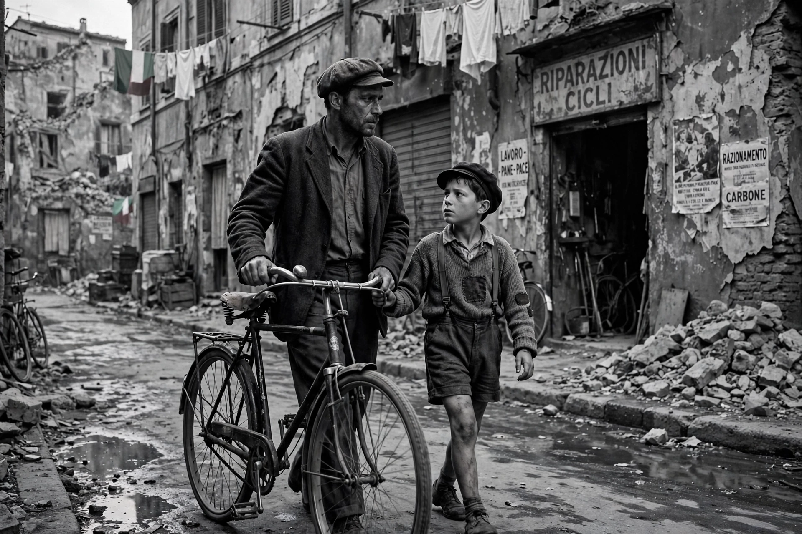

Italian neorealism, also known simply as neorealism, is a film movement that began in Italy at the end of the Second World War. It is characterised by stories of the poor and working class, shot on location, often with non-professional actors, depicting the difficult economic and moral conditions of postwar Italy.
Landmarks include Luchino Visconti's Ossessione (1943), Roberto Rossellini's Rome, Open City (1945), Paisan (1946) and Germany, Year Zero (1948), and Vittorio De Sica's Shoeshine (1946), Bicycle Thieves (1948) and Umberto D. (1952). Screenwriter Cesare Zavattini was a central theorist of the movement.
Neorealists rejected studio sets and glamorous stars, favouring real locations, natural light, long takes, and ordinary speech. Themes included poverty, unemployment, resistance to fascism, and children's experience of war.
The movement profoundly influenced world cinema, including the French New Wave, Satyajit Ray in India, and later realist filmmakers worldwide.